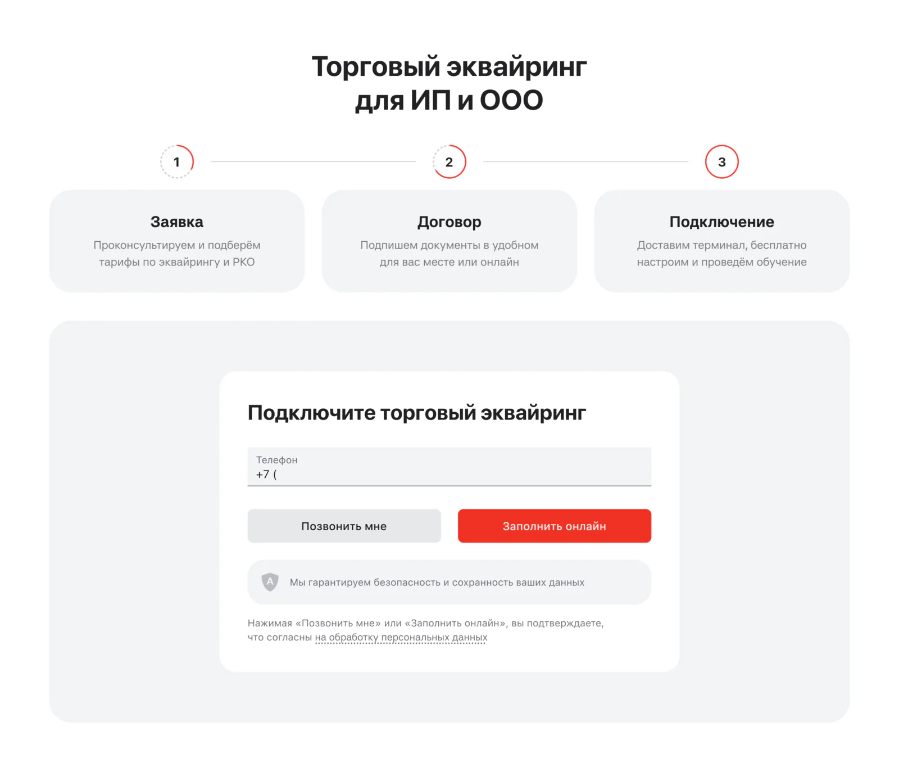
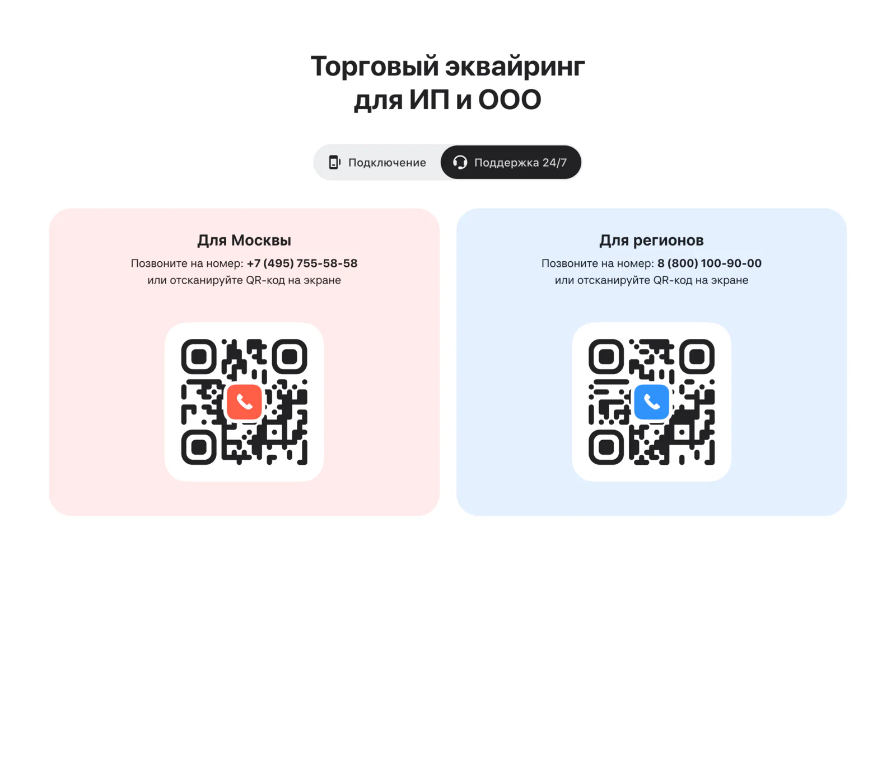
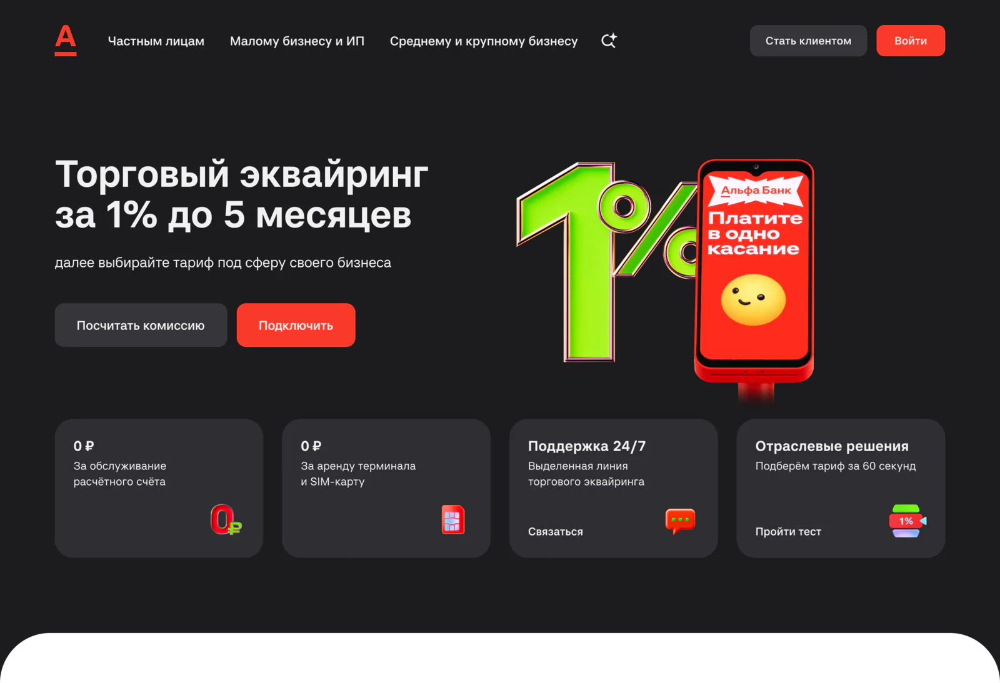

When 30% of sales leads are support calls
The application form for new acquiring clients kept filling up with existing clients looking for help. I intercepted them twice on the way to the form, held the line on giving them a phone number rather than more options — and went looking for why they come at all.


About

Russia's largest private bank. I work on merchant acquiring — card payments for small and medium businesses — on the bank's website.
- Site MAU
- 22M+
- New acquiring clients, Jan – Sep 2026
Problem
The business came to us after a meeting with the call centre. Of every 50 call-backs to applications from the acquiring form, 15 weren't from new clients at all — 30%.
Existing clients left their number to reach support. A sales agent called back about connecting — and could neither help them nor transfer the call: there's no way to switch to the support line.
Every one of those calls is wasted time for the call centre and a frustrated client. And they came from all three main acquiring pages — whatever was on the page, the form worked as a trigger to “leave a number and someone will help”.
My role
Senior Product Designer on merchant acquiring at the bank's website. A one-sprint task in September 2026. Both hypotheses below are mine, and I defended them to the business. I also went after the root cause outside our product and handed my findings to the teams that own it.
Reframe
A client who comes to the form for help hasn't made a mistake. They're looking for a way to reach the bank, and the form is the most visible one.
The bank already has two separate lines — one for connecting, one for support. The channel exists; it just isn't visible at the moment people look for it. So the job isn't to block the form, but to show the right line before they reach it — and once more if they do.
Decision 1: catch them at the top
On an earlier task, heatmaps showed that people click the benefit tiles in the main banner — even though across the site those tiles aren't clickable. People read them as buttons, so we'd started using that: the fourth tile already opens the tariff quiz.
The third tile already said “Support 24/7”, but it was just a label. I gave it substance: now it opens a window with both support numbers, for Moscow and for the regions, plus QR codes to call straight from a phone. Some of the people looking for help get it in the first screen, before they ever scroll to the form.

Decision 2: a choice in the form
For those who still head for the form, it now opens with two tabs: Connect and Support 24/7. The support tab shows the two numbers of our dedicated lines and QR codes I added so people can scan and call in a second.
The risk is scaring off new clients. A client / not a client tab switch is already used in many forms across the site, so the pattern is familiar and the Connect tab works exactly as before.
The argument: one door, not three
The business wanted to add links to the knowledge base and the Telegram bot to the support tab. Their logic: the more options, the better.
Mine: the more options, the higher the cognitive load — and the easier it is to just leave a number in the form again.
We already knew the problem was calls. These people want a human voice, not to search for an answer or write to a bot. For the first iteration it's right to hit exactly that point and measure it cleanly. The business agreed: the support tab has phone numbers only.
The root cause I couldn't sell
The form treats the symptom. Nobody actually knew why existing clients come to a sales page for help, so that's where I started.
- The welcome email. It's the first touchpoint that explains the basics and lists the support numbers. If clients end up in our form, it probably isn't working — or gets lost
- The internet bank. It isn't quite clear there how to reach support
Both are hard to check from where I sit: email engagement — whether people come back to the email and how often — and the internet bank belong to other teams and another business line. I asked the business to dig up the email metrics and passed my internet bank hypotheses to the designer there, so they can revisit their side.
I also drafted a welcome page: everything about your acquiring in one place, with the tariff, next steps and support. I couldn't sell it — the business couldn't estimate its effect, and the integrations make it expensive to build for now.
Status
Both changes are rolling out to 100% of traffic — not as an A/B test. The share of support requests is measured the same way as the 30% baseline: through the call centre's monthly statistics. To tell the two changes apart, the support window in the banner and the support tab in the form are tracked as separate events. And CR1 has to hold.
What I took from it
Misdirected leads aren't a user error. They're a signal that the right channel isn't visible when people look for it.
Another door isn't always help. When someone wants to call, the best experience is letting them call.
And the welcome page taught me to come with numbers, not just an idea: next time I'll first estimate how many calls it would take off the call centre — that's the language the decision is made in.